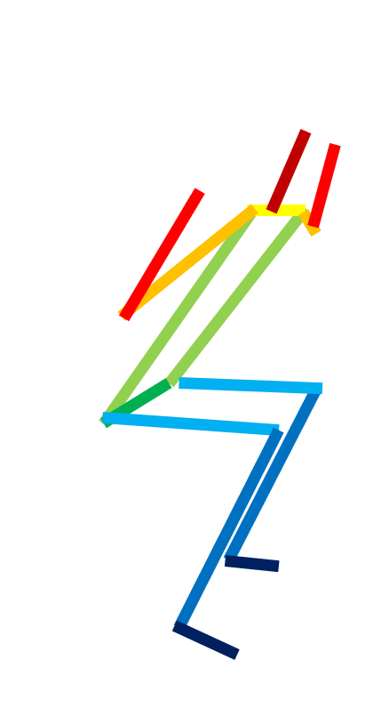

Aadarsh Padiyath, Emilee Sisson, Jorge Betancourt, Roy Finkelberg
Problem Statement
Current pose estimation techniques are able to map a wire frame onto video of a moving person. We present an application of 2D pose estimation for assessment of proper workout form. Given input video of a person performing an exercise, our system will compare the subject's wire frame with that of a template representing "ideal" form. The system will then superimpose the template with the input and return the resulting overlay with a performance metric representing the similarity between the two.
| Input |
Template |
Overlay |

|

|

|